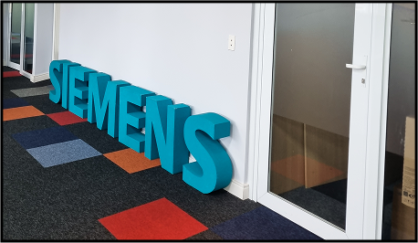

Bem-vinda(o) ao meu portfólio
Explore minha trajetória acadêmica e profissional, projetos e aprendizados no mundo da tecnologia.
'Hello World!'
Explore minha trajetória acadêmica e profissional, projetos e aprendizados no mundo da tecnologia.
Durante a pandemia, explorei cursos na Alura e desenvolvi habilidades em JavaScript, lógica de programação, POO e UX Design.
Trabalhei com Arduino e ESP32, modelagem 3D e desenho industrial. A experiência me fez aplicar teoria em projetos reais e variados.
Curso Análise e Desenvolvimento de Sistemas na UNINTER. Interesso-me por APIs, BI, bancos de dados e busco evolução contínua.
Na Marelli, desenvolvi automações, auditoria, controle de acessos e boas práticas de segurança da informação no setor de TI.
Atualmente trabalho no time COMOS da SIEMENS e sigo motivada a crescer em ambientes desafiadores, sempre em busca de inovação e aprendizado constante.
